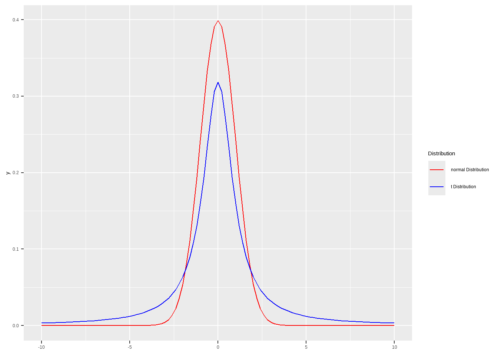

Show the code
ggplot() + xlim(-10,10) +
geom_function(mapping = aes(color="normal Distribution"),
fun = dnorm, args = list(mean = 0, sd = 1),
)+
geom_function(mapping = aes(color="t Distribution"),
fun = dt, args = list(df = 1 ,ncp=0),
)+
scale_color_manual(values = c("normal Distribution" = "red",
"t Distribution" = "blue"))+
labs(color = "Distribution")